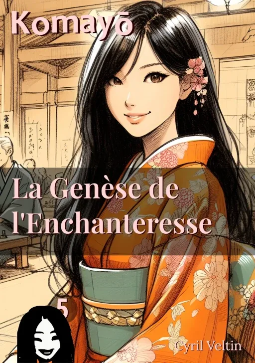

La Genèse de l'Enchanteresse

ISBN : 978-2-9589581-4-5
Préambule
Dans le Japon de l'époque d'Edo, où les ombres dansent avec les lumières des lanternes et où les histoires se murmurent dans l'obscurité des nuits sans lune, se déroule un rituel ancestral : le Hyakumonogatari Kaidankai. Cette cérémonie des cent histoires de fantômes, tradition séculaire, invite les participants à partager leurs récits les plus troublants tout en éteignant, un à un, les cent andons qui illuminent la pièce.
Ce soir-là, dans une demeure traditionnelle aux murs de papier de riz, un groupe s'est rassemblé pour perpétuer cette tradition. Les lanternes projettent leurs lueurs vacillantes sur les visages attentifs, créant un ballet d'ombres qui semblent danser au rythme des battements de cœur des participants.
Alors que le quatre-vingt-quatrième andon continue de brûler paisiblement, une femme prend la parole. Son nom est Mayoko, et elle s'apprête à partager un récit qui remonte à l'ère Kamakura. Une histoire qui commence avec un simple jeu, né dans un village reculé, et qui trouve son dénouement dans la cour d'un puissant gokenin.
Dans la pénombre grandissante de la pièce, alors que l'encens se consume lentement et que les ombres s'allongent, l'assemblée retient son souffle. Car dans ce Japon où les yokai rôdent dans l'obscurité et où la magie imprègne chaque recoin de l'existence, les histoires les plus simples peuvent cacher les secrets les plus profonds.
Et ce soir, tandis que la quatre-vingt-quatrième flamme vacille doucement, une voix s'élève pour raconter une histoire qui traverse les âges, une histoire de passion, d'honneur et de destinée.
Extraits choisis
Le Berceau du Ōgi
Mon village natal était un petit coin reculé, commence-t-elle, sa voix teintée de douceur et d'émerveillement.Enfant unique, j'étais une boule d'énergie, toujours en quête de créativité et de stimulation. Mes parents disaient souvent qu'il fallait sans cesse nourrir mon esprit avide.
Pour mes six ans, mes parents m'ont inscrite à un club de shōgi. Et à huit ans, mon père m'a offert un cadeau très spécial.Avec un mouvement gracieux, elle ouvre son sac et en sort un objet qui capte immédiatement l'attention de l'assemblée : un plateau qui évoque un jeu d'échecs, mais avec une aura d'antiquité et de mystère. Elle le place devant elle avec un soin presque cérémoniel.
Élégance et Anticipation Avant le Duel
Un grand duel fut organisé dans la cour du gokenin, commence-t-elle.Pour cet événement, le personnel s'est assuré que je sois préparée avec une élégance digne d'une princesse.
J'étais vêtue d'un kimono d'un bleu nuit profond, évoquant la mystérieuse essence de la nuit. Le tissu, orné de motifs floraux délicats et de représentations mythologiques telles que des dragons et des phénix, symbolisait à la fois la force et la renaissance. Les motifs, tissés en fil d'or et d'argent, scintillaient subtilement sous la lumière, ajoutant une touche de raffinement.